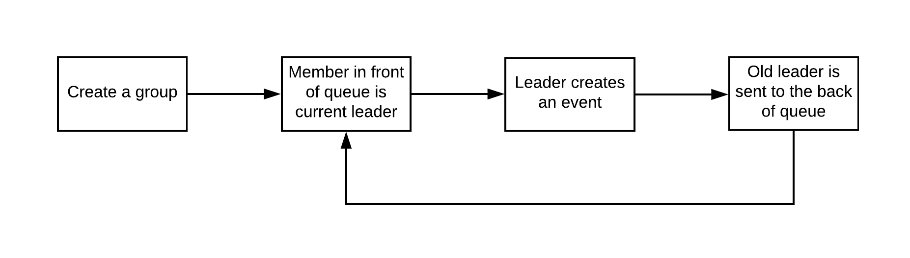

About
This project is from my User Experience and Information Architecture class. We were tasked with coming up with an information architecture proposal for the Foodie Fanatic website, a fabricated company with business goals and constraints.
Team members: Hang Shuhang He, Constant La, Sangwoo Martin Song
My role: Client Manager, I ensured that all our design decisions aligned with Food Fanatic's businesss goals.
Research
Case Study
We were given a case study to learn about Foodie Fanatic's business goals, users, problems, and current state.

Interview
We invited a local foodie into the classroom to conduct an interview.
Competitive Analysis
We identified and evaluated the strengths and weaknessesss of five similar businesses to help us create our business plan, site map, taxonomy, and wireframes for Foodie Fanatic. The main weakness we found among these five competitors is that there is little to no online community. Food52 is the strongest in this aspect, but they limit their online community to one page on the site: the hotline. This is where we decided to focus our attention on in our business plan and information architecture strategy.
Our Plan
From the answers that our interviewee provided, we discovered that the difficulties with planning activities with a group of friends is not necessarily with just the logistical details, but also with coming up with a decision. Every participant of an activity introduces factors such as time, budget, and interests, and these factors can conflict. This conflict creates an indecisiveness environment. In a casual group, there is usually equal power spread among the members. An environment where everyone is equal can make it difficult for an individual to break a deadlock when no one is willing to evaluate the current conflicts and situations to come up with a final decision for the whole group. Our interviewee have had events cancelled due to the group’s inability to make a decision for time-sensitive activities. Both of these play a negative role in the environment of a group, and can create conflicts later on due to reduced trust in the group’s ability to create and attend social gatherings.
Solution
To solve this problem, we chose to create a mobile app that uses an alternating leadership system in groups. Instead of every group member having equal equity at the same time, this systems allows everyone to have equal equity over time.
The group starts out with one leader who will create an event for the group. Once the event is made, the creator is sent to the very back of the queue, and a new leader takes their place to plan the next event. Out of all the decision making methods out there, we found that this is one of the better and simpler ways to evoke fun and fair activities within groups.
One of the more popular ways to decide from a variety of options is to have a vote. However, a simple majority rule is unfair to people with minority viewpoints. This alternating leadership system allows everyone in a group to have a chance to be an authoritative figure, which has the added benefit of getting people comfortable with being a leader. Lastly, our research shows that having a leader in a group often results in a higher decision-quality relative to majority-decision making.
Wireframes
Our first idea used a proposal mechanic. A leader would propose an event to the whole group, which a group member could veto. We wanted the group members to have some power to prevent undesirable situations. Each group member could only veto once, until the leader changed. The leader switched once the event has happened. This prevented members from abusing the system, and to encourage them to only veto an event as a last resort.
Leadr also offered the ability to plan upcoming events in groups through text posts and instant messaging. This would behave similarly to Facebook groups, where members can create posts, and other members can react and reply to those posts.
We tested our low-fidelity screens with our sister team to confirm that we were solving the problem they were having. They found the idea of an alternating leadership system with proposals interesting and did not have many questions regarding the design.
Mockups Ver. 1
We tested our proposal mechanic with high-fidelity screens to six other teams in the class. We had them do three tasks: create a new group, create a new event in a specific group, and veto a proposed event.
From our tests, we discovered that people were using the "OK" and "VETO" buttons as a way to RSVP for an event. This was a major breakdown in our design, since vetoing an event would cancel it completely for the whole group. There were also many questions and concerns regarding the vetoing mechanic. What if the leader just creates the same event after it has been vetoed? Why only one veto? What if the group had ten, twenty, or fifty members? Would this still work?
We also discovered another problem with our leadership system. The leader for a group would also only change after an event has happened because we did not want to constantly switch leaders when an event would get created, and when an event would get vetoed. However, this limited the group to only plan one event at a time, which could be frustrating for some groups.
Lastly, our design had problems with the social aspect. The placement of the "post" button was also confusing for many of our testers. The button was meant to be for creating a new text post in the group, but since it was so far away from the actual posts, it looked out of place. One of our tester also expressed concerns about having to use another social media application to communicate with her friends.
The add group, calendar, and search screen received no comments, so they were left unchanged.
Mockups Ver. 2
We scraped the idea of proposing an event. The leader makes the event for the group, and then the leader changes. Leaders also have the ability to pass leadership if they wish, in case they are uncomfortable with planning the event, or simply cannot. The ability to veto an event had been removed because it was too confusing and too difficult to make it work. Group member can only RSVP for events.
We also completely removed the ability to communicate with other group members in Leadr, users must rely on a third-party application to generate ideas and talk about constraints. This was done to simplified the app's functionality, and because Chris and I had a deadline to meet. We felt that we could not design a great communication experience in the time we had left.